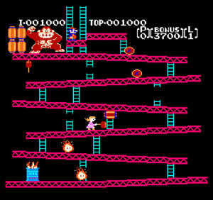

La première apparition de Mario est en 1981 dans le jeu Donkey Kong. Il devait sauvé Pauline des griffes de Donkey Kong. À la base il ne s'appelait pas encore Mario mais Jumpman et il n'était pas plombier mais charpentier. Il devait grimper des échafaudages en évitant des tonneaux.
Après deux gros succès de jeux avec la présence de Mario, le premier jeu avec comme héros principal Mario sorti : Mario Bros.
Il se ballade dans les égouts de New-York avec son frére Luigi et se bat contre différents ennemis qui pour certains
deviendrons connus comme Koopa.
Mario fût véritablement connu à la sorti en 1985 de Super Mario Bros. qui deviendra la deuxième jeu le plus vendu.
C'est dans ce jeu que sont introduit les personnages de Bowser ou Peach et la célèbre musique.